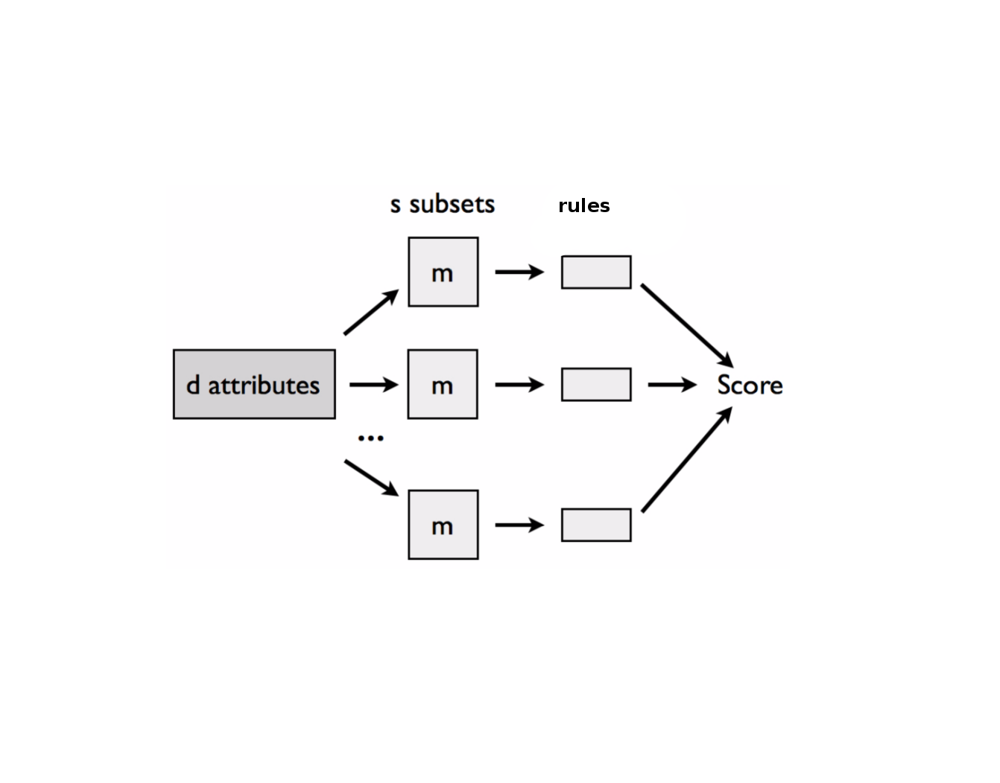

Czy cuda się zdarzają?
Czyli attribute selection
dzięki klasyfikatorom regułowym
Paweł Olszewski
Random Subtables & Rules
\[Score(a_i) = \sum_{k = 1}^{s} \sum_{j=1}^{l} \mathbb{I}(a_i \in Rule_{k,j}) \]
- \(Rule_{k,j}\) - \(j\)-ta reguła w \(k\)-tej podtablece
- \(s\) - liczba podzbiorów obiektów
- \(a_i\) - \(i\)-ty atrybut
Pierwszy eksperyment
na danych
mikromacierzowych
Jak wyglądają wygenrowane reguły
przez algorytm z RSESliba?
( attribute_0 in (-Infinity;83.75) ) & ( attribute_4 in (53.0;Infinity) ) -> ( DEC = 5 )
Zliczanie atrybutów...
for (Rule it : rules) {
String actual = it.toString();
for (int i = 0; i < numberOfAttribute; i++) {
String attributeNumber = "_" + i;
if (actual.contains(attributeNumber)) {
int value = number.get(i) + 1;
number.set(i, value);
}
}
}
Dwie godziny później...
Wziąłem dane, które były dostępne
na systemach decyzyjnych
Zmniejszamy parametry w stosunku
do danych mikromacierzowych
1000 podtablic po 50 obiektów w każdej
Jak wybieram atrybuty?

dla danych z systemów decyzyjynych
| Numer atrybutu | Liczba wystąpień |
| 1 | 14336 |
| 0 | 7574 |
| 4 | 4321 |
| 3 | 3799 |
| 2 | 3719 |
| 15 | 3677 |
| 8 | 3526 |
| 13 | 3393 |
| 6 | 3180 |
| 7 | 3132 |
| 5 | 3095 |
| 10 | 3047 |
| 9 | 3017 |
| 8 | 2261 |
| ... | ... |

| Lp | Acc |
| 2 | 42.9% |
| 3 | 49.8% |
Tyle samo co algorytm RandomReducts
| Reducts | Reducts | Rules | Rules II | Rules III | |
| Acc | 83.58% | 90% | 84.21% | 89.36% | 90.6% |
| Atrr | 6 | 7 | 6 | 7 | 8 |
| Time | 10.7 sec | 19.7 sec | 70.2 sec | 73.2 sec | 163.4 sec |
Niestety tak...
Bugi w RSESlibie...
Brak porządnego algorytmu do generowania reguł
Przy uruchamianiu eksperymentów dostajemy...
java.lang.ArrayIndexOutOfBoundsException
Wyjątek, który rzuca metoda "add", spowodowana następującą rzecząprivate static ArrayList <String> s_StringValueList
Problem z wielowątkowością.
Przy eksperymentach założyłem, że jeżeli wyjątek nie jest rzucany to obliczenia są poprawne
Pomimo ustawionego ziarna, reguły potrafią
nieznacznie różnić się od siebie
Wahanie accuracy...
...w granicach 0.2%
1) Znaleźć metodę cięcia atrybutów
2) Poszukać jeszcze innego klasyfikatora regułowego
3) Uruchomić obliczenia na Sparku
i danych mikromacierzowych
4) Wprowadzenie metody reduktowej
Na wybranych podtabelkach nie generujemy reguł
Jak w takim razie będziemy liczyć score atrybutu?
| Obiekt | a | b | c | d | e | dec |
| \(X_1\) | 0 | 1 | 0 | 1 | 1 | + |
| \(X_i\) | ... | ... | ... | ... | ... | ... |
| \(X_j\) | 1 | 1 | 0 | 0 | 1 | - |
Musimy zachować któryś z atrybutów \(a\) lub \(d\)
for (Object first : objects) {
for(Object second : objects) {
if(firstObject != secondObject) {
diffTable.add(first.diffAttributes(second));
}
}
}
| \(X_j\) | ... | |
| \(X_1\) | \(a\) \(b\) | ... |
| ... | ... | ... |
Scorem atrybutu będzię liczba wystąpień danego atrybutu we wszystkich podtabelkach